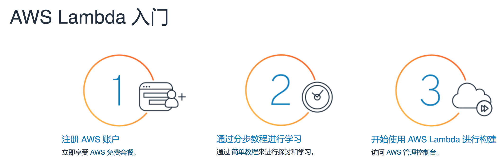
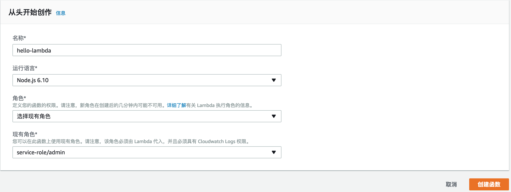
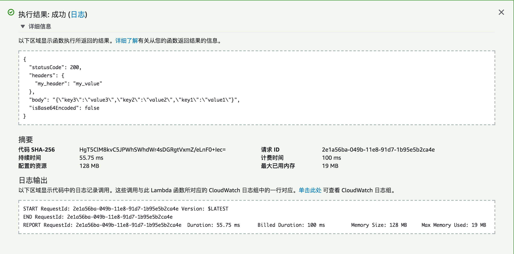
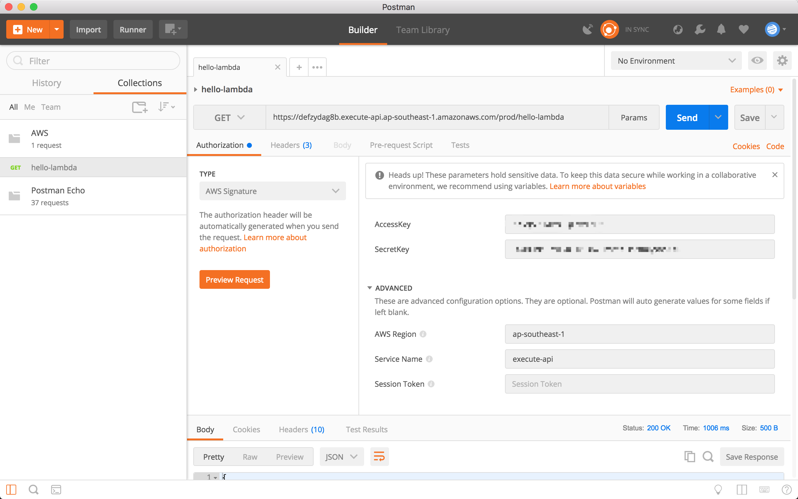
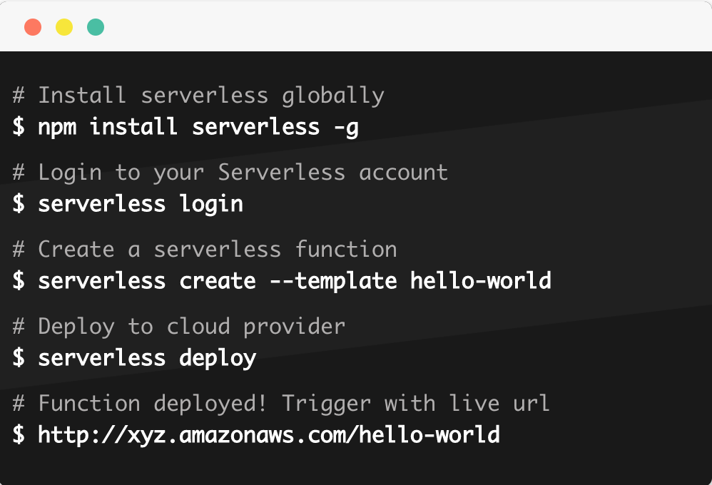

<!DOCTYPE HTML>
<html>
<head><meta name="generator" content="Hexo 3.9.0">
  <meta charset="utf-8">
  <meta http-equiv="X-UA-Compatible" content="IE=edge">
  <meta name="apple-mobile-web-app-capable" content="yes">
  <meta name="apple-mobile-web-app-status-bar-style" content="black">
  <meta name="google-site-verification" content>
  
  <title>零基础玩转Serverless</title>
  <meta name="author" content="Emac">
   <meta name="description" content="上篇文章首先指出了Serverless=No Server这一常见误区，然后明确定义了函数这个Serverless中的核心概念，接着介绍了Serverless的4个关键特性：运行成本更低、自动扩缩容、事件驱动、无状态性，最后分析了Serverless和微服务、DevOps之间的关联关系。为了帮助大家">
  

  <meta property="og:title" content="零基础玩转Serverless">
  <meta name="viewport" content="width=device-width, initial-scale=1, maximum-scale=1">
  <meta property="og:site_name" content="Emac">
 <meta property="og:image" content="undefined">
  
  <link href="/apple-touch-icon-precomposed.png" sizes="180x180" rel="apple-touch-icon-precomposed">
  <link rel="alternate" href="/atom.xml" title="Emac" type="application/atom+xml">
  <link rel="stylesheet" href="//cdn.bootcss.com/bootstrap/3.3.6/css/bootstrap.min.css">
  <link rel="stylesheet" href="//cdn.bootcss.com/font-awesome/4.5.0/css/font-awesome.min.css">
  <link rel="stylesheet" href="/css/m.min.css">
  <link rel="icon" type="image/x-icon" href="/favicon.ico">
</head>
</html>
<body>
  <div id='wx_pic' style='display:none;'></div>
  <div id="main">
    <div class="behind">
      <div class="back">
        <a href="/" class="black-color"><i class="fa fa-times" aria-hidden="true"></i></a>
      </div>
      <div class="description">
        &nbsp;拾贝
      </div>
    </div>
    <div class="container">
      

  <article class="standard post">
    <div class="title">
      
  
    <h1 class="page-title center">
        零基础玩转Serverless
    </h1>
  


    </div>
    <div class="meta center">
      
<time datetime="2018-02-03T16:00:00.000Z">
  <i class="fa fa-calendar"></i>&nbsp;
  2018-02-04
</time>


    
    &nbsp;
    <i class="fa fa-tag"></i>&nbsp;
    <a href="/categories/arch/">arch</a>


    
    &nbsp;
    <i class="fa fa-tag"></i>&nbsp;
    <a href="/tags/原创/">原创</a>·<a href="/tags/Serverless/">Serverless</a>


    </div>
    <hr>
    <div class="picture-container">
      
    </div>
    <blockquote>
<p><a href="http://emacoo.cn/arch/serverless-overview/">上篇</a>文章首先指出了Serverless=No Server这一常见误区，然后明确定义了<strong>函数</strong>这个Serverless中的核心概念，接着介绍了Serverless的4个关键特性：运行成本更低、自动扩缩容、事件驱动、无状态性，最后分析了Serverless和微服务、DevOps之间的关联关系。为了帮助大家更直观的理解Serverless，本文将介绍三种在<a href="https://aws.amazon.com/cn/lambda/" target="_blank" rel="noopener">AWS Lambda</a>上创建函数的方式。</p>
</blockquote>
<h2 id="1-Hello-AWS-Lambda"><a href="#1-Hello-AWS-Lambda" class="headerlink" title="1 Hello, AWS Lambda!"></a>1 Hello, AWS Lambda!</h2><p></p>
<h3 id="1-1-注册AWS账户"><a href="#1-1-注册AWS账户" class="headerlink" title="1.1 注册AWS账户"></a>1.1 注册AWS账户</h3><p>首先，打开Amazon AWS<a href="https://amazonaws-china.com/cn/" target="_blank" rel="noopener">官网</a>，点击右上角<strong>注册</strong>按钮开始注册流程。</p>
<p>注册AWS除了邮箱、地址、手机号（用于接受语音验证码）等基本信息之外，还需要绑定一张信用卡（银联、MasterCard、VISA），绑卡过程中会发生一笔1美元的信用卡预授权扣费。</p>
<p>注册成功之后，即可获赠<a href="https://amazonaws-china.com/cn/free/" target="_blank" rel="noopener">AWS免费套餐</a>大礼包，包括12个月免费的基础IaaS &amp; PaaS服务（比如EC2, S3, RDS等），以及永久免费的AWS Lambda<a href="https://amazonaws-china.com/cn/lambda/pricing/" target="_blank" rel="noopener">免费套餐</a>（包括每月100万个免费请求以及每月400000GB-秒的计算时间，对于个人使用而言完全是足够了）。</p>
<h3 id="1-2-创建函数"><a href="#1-2-创建函数" class="headerlink" title="1.2 创建函数"></a>1.2 创建函数</h3><p>接下来，就来创建第一个AWS Lambda函数吧。</p>
<p>1) 登录AWS，点击最上方的菜单栏<strong>服务-&gt;计算：Lambda</strong>，进入Lambda控制台。<br>2) 在页面上找到并点击<strong>创建函数</strong>按钮。<br>3) 作为第一个函数，选择<strong>从头开始创作</strong>，输入函数名称<code>hello-lambda</code>，运行语言选择<code>Node.js 6.10</code>，角色选择系统默认创建的<code>service-role/admin</code>，点击<strong>创建函数</strong>完成创建。</p>
<p></p>
<h3 id="1-3-简单测试"><a href="#1-3-简单测试" class="headerlink" title="1.3 简单测试"></a>1.3 简单测试</h3><p>新函数创建好之后，就可以开始测试了。在函数详情页的右上角找到并点击<strong>测试</strong>按钮，第一次会提示你先创建一个测试事件，输入名称，使用默认模板完成创建。回到详情页，再次点击<strong>测试</strong>按钮，就会触发测试。测试完成之后，展开详细信息，就可以看到具体的响应结果，以及本次测试产生的计费时间。</p>
<p></p>
<h3 id="1-4-公网测试"><a href="#1-4-公网测试" class="headerlink" title="1.4 公网测试"></a>1.4 公网测试</h3><p>函数详情页的测试按钮是最简单的一种测试Lambda函数的方式，但这种方式仅限于AWS内网，如果想在公网环境下进行测试，该如何操作呢？最自然的方式是绑定API Gateway，将函数转化为可公开调用的API。</p>
<h4 id="1-4-1-绑定API-Gateway"><a href="#1-4-1-绑定API-Gateway" class="headerlink" title="1.4.1 绑定API Gateway"></a>1.4.1 绑定API Gateway</h4><p>1) 同样是函数详情页，在左侧找到<strong>添加触发器</strong>，点击<strong>API Gateway</strong>，保持默认设置完成添加。<br>2) 修改函数代码，返回符合API Gateway格式要求的响应结果，参考<a href="https://amazonaws-china.com/cn/premiumsupport/knowledge-center/malformed-502-api-gateway/" target="_blank" rel="noopener">这里</a>。<br>3) 保存上述改动。</p>
<figure class="highlight plain"><table><tr><td class="gutter"><pre><span class="line">1</span><br><span class="line">2</span><br><span class="line">3</span><br><span class="line">4</span><br><span class="line">5</span><br><span class="line">6</span><br><span class="line">7</span><br><span class="line">8</span><br><span class="line">9</span><br><span class="line">10</span><br><span class="line">11</span><br><span class="line">12</span><br><span class="line">13</span><br><span class="line">14</span><br><span class="line">15</span><br><span class="line">16</span><br><span class="line">17</span><br></pre></td><td class="code"><pre><span class="line">exports.handler = (event, context, callback) =&gt; &#123;</span><br><span class="line">    var responseBody = &#123;</span><br><span class="line">        &quot;key3&quot;: &quot;value3&quot;,</span><br><span class="line">        &quot;key2&quot;: &quot;value2&quot;,</span><br><span class="line">        &quot;key1&quot;: &quot;value1&quot;</span><br><span class="line">    &#125;;</span><br><span class="line"></span><br><span class="line">    var response = &#123;</span><br><span class="line">        &quot;statusCode&quot;: 200,</span><br><span class="line">        &quot;headers&quot;: &#123;</span><br><span class="line">            &quot;my_header&quot;: &quot;my_value&quot;</span><br><span class="line">        &#125;,</span><br><span class="line">        &quot;body&quot;: JSON.stringify(responseBody),</span><br><span class="line">        &quot;isBase64Encoded&quot;: false</span><br><span class="line">    &#125;;</span><br><span class="line">    callback(null, response);</span><br><span class="line">&#125;;</span><br></pre></td></tr></table></figure>
<p><em>示例函数代码</em></p>
<p>点击最上方的菜单栏<strong>服务-&gt;网络和内容分发：API Gateway</strong>，进入API Gateway控制台，在左侧导航栏应该能够看到<strong>API-&gt;LambdaMicroservice</strong>，说明函数已经成功绑定。依次点击<strong>API-&gt;LambdaMicroservice-&gt;阶段-&gt;prod-&gt;/-&gt;hello-lambda-&gt;GET</strong>，记下调用URL。</p>
<h4 id="1-4-2-创建用户"><a href="#1-4-2-创建用户" class="headerlink" title="1.4.2 创建用户"></a>1.4.2 创建用户</h4><p>API Gateway默认使用的鉴权方式是AWS_IAM，即调用方必须拥有特定的IAM Permssions才能调用API，参考<a href="https://docs.aws.amazon.com/apigateway/latest/developerguide/permissions.html" target="_blank" rel="noopener">这里</a>。具体来说，需要一个拥有<code>execute-api:Invoke</code>权限的用户。</p>
<p>1) 点击最上方的菜单栏<strong>服务-&gt;安全、身份与合规：IAM</strong>，进入IAM控制台。<br>2) 点击左侧导航栏<strong>用户</strong>，进入用户面板。<br>3) 点击<strong>添加用户</strong>按钮，输入用户名，访问类型选择<strong>编程访问</strong>，点击<strong>下一步：权限</strong>。<br>4) 选择<strong>直接附加现有策略</strong>，搜索并选中<code>AmazonAPIGatewayInvokeFullAccess</code>，完成创建。<br>5) 返回用户列表页，点击刚刚创建的用户进入用户详情页，点击<strong>安全证书-&gt;创建访问密钥</strong>，记下<strong>访问密钥 ID</strong>和<strong>私有访问密钥</strong>。</p>
<h4 id="1-4-3-使用Postman测试API"><a href="#1-4-3-使用Postman测试API" class="headerlink" title="1.4.3 使用Postman测试API"></a>1.4.3 使用Postman测试API</h4><p>做完前两步的准备工作，就可以使用Postman进行测试了。</p>
<p>1) 下载并启动<a href="https://www.getpostman.com/" target="_blank" rel="noopener">Postman</a>。<br>2) 创建一个新的请求，<strong>Authorization</strong>选择<code>AWS Signature</code>，输入之前记下的URL、AccessKey（访问密钥 ID）和SecretKey（私有访问密钥），AWS Region填入URL中紧邻<strong>amazonaws.com</strong>的一个子域名，Service Name填入<code>execute-api</code>。<br>3) 点击<strong>Send</strong>，稍等一会，应该就能看到正常的响应结果。</p>
<p></p>
<p>进一步信息可参考<a href="https://docs.aws.amazon.com/apigateway/latest/developerguide/how-to-use-postman-to-call-api.html" target="_blank" rel="noopener">这里</a>。</p>
<h2 id="2-加餐一：Spring-Cloud-Function"><a href="#2-加餐一：Spring-Cloud-Function" class="headerlink" title="2 加餐一：Spring Cloud Function"></a>2 加餐一：Spring Cloud Function</h2><p>除了Node.js，AWS Lambda还支持Java 8、C#、Go、Python等多种运行语言。接下来，就以一个<a href="http://cloud.spring.io/spring-cloud-function/spring-cloud-function.html" target="_blank" rel="noopener">Spring Cloud Function</a>（简称SCF）应用为例，展示如何创建一个Java 8的函数。</p>
<blockquote>
<p>SCF是Spring社区提供的一个以函数为核心的开发框架。除了本地运行，SCF应用还可以部署到AWS、Azure、OpenWhisk等多种Serverless平台。最新的发布版本是1.0.0.M3。</p>
</blockquote>
<p><strong>打包应用：</strong></p>
<p>1) <code>git clone</code>SCF<a href="https://github.com/spring-cloud/spring-cloud-function" target="_blank" rel="noopener">官方仓库</a>。<br>2) 进入<strong>spring-cloud-function-samples/function-sample-aws</strong>目录，运行<code>mvn clean package</code>。<br>3) 运行成功后在<strong>target</strong>目录下可以找到名为<strong>function-sample-aws-1.0.0.BUILD-SNAPSHOT-aws.jar</strong>的应用包。</p>
<p><strong>创建函数：</strong></p>
<p>1) 和之前一样，进入Lambda控制台，点击<strong>创建函数</strong>按钮，运行语言选择<code>Java 8</code>，完成创建。<br>2) 进入函数详情页，点击<strong>函数代码-&gt;上传</strong>按钮，选择之前打好的应用包，处理程序改为<code>org.springframework.cloud.function.adapter.aws.SpringBootStreamHandler</code>。<br>3) 保存修改。</p>
<p><strong>测试函数：</strong></p>
<p>1) 进入函数详情页，点击右上角的<strong>测试</strong>按钮，填入<code>{&quot;value&quot;: &quot;hello, lambda!&quot;}</code>创建新的测试事件。<br>2) 再次点击<strong>测试</strong>按钮，触发第一次测试。不出意外，第一次测试会提示失败，错误消息类似于<code>errorMessage&quot;: &quot;2018-02-04T13:09:59.745Z b1c9b0a1-09ac-11e8-9fdf-858e20f0ff70 Task timed out after 3.00 seconds&quot;</code>。出错的直接原因是函数设置的超时时间太短（默认3秒），根本原因是函数的无状态性，每次函数调用都要经历一次冷启动，这对于Node应用没有太大问题，但对于Java 8应用，即便是一个最简单的Hello World应用，完成一次冷启动至少需要5到10秒。<br>3) 修改<strong>基本设置-&gt;内存</strong>为<code>512MB</code>，<strong>基本设置-&gt;超时</strong>为<code>5分钟</code>，保存然后重新测试。这一次测试应该可以成功，返回结果为<code>{&quot;value&quot;: &quot;HELLO, LAMBDA!&quot;}</code>。</p>
<h2 id="3-加餐二：serverless-toolkit"><a href="#3-加餐二：serverless-toolkit" class="headerlink" title="3 加餐二：serverless toolkit"></a>3 加餐二：serverless toolkit</h2><p>除了直接在AWS后台创建函数，还有一种更为简便的方式，使用<a href="https://serverless.com/" target="_blank" rel="noopener">serverless.com</a>平台提供的serverless toolkit。</p>
<p></p>
<p>操作非常简单，这里就不展开了，不过有两点需要注意：</p>
<ul>
<li>在将应用部署到AWS之前，先要创建一个拥有<code>AdministratorAccess</code>权限的用户，参考<a href="https://serverless.com/framework/docs/providers/aws/guide/credentials/" target="_blank" rel="noopener">这里</a>。</li>
<li>默认创建的应用鉴权为空，即可以在公网直接访问。</li>
</ul>
<h2 id="4-小结"><a href="#4-小结" class="headerlink" title="4 小结"></a>4 小结</h2><p>以上简单介绍了三种在AWS Lambda上创建函数的方式，希望对你理解Serverless有所帮助。有关Serverless其他特性的研究，以后有机会我再跟你分享。欢迎你到我的<a href="https://github.com/emac/emac.github.io/issues/2" target="_blank" rel="noopener">留言板</a>留言交流，和大家一起过过招。</p>
<h2 id="5-参考"><a href="#5-参考" class="headerlink" title="5 参考"></a>5 参考</h2><ul>
<li><a href="http://serverless.ink/" target="_blank" rel="noopener">Serverless 应用开发指南</a></li>
<li><a href="https://spring.io/blog/2017/07/05/introducing-spring-cloud-function" target="_blank" rel="noopener">Introducing Spring Cloud Function</a></li>
</ul>


  </article>
  </script>
    <script async src="https://dn-lbstatics.qbox.me/busuanzi/2.3/busuanzi.pure.mini.js">
  </script>
  <div class="busuanzi center">
    页阅读量:&nbsp;<span id="busuanzi_value_page_pv"></span>&nbsp;・&nbsp;
    站访问量:&nbsp;<span id="busuanzi_value_site_pv"></span>&nbsp;・&nbsp;
    站访客数:&nbsp;<span id="busuanzi_value_site_uv"></span>
  </div>


    </div>
  </div>
  <footer class="page-footer"><div class="clearfix">
</div>
<div class="right-foot container">
    <div class="firstrow">
        <a href="#top" >
        <i class="fa fa-arrow-right"></i>
        </a>
        © emacoo.cn 2015-2020
    </div>
    <div class="secondrow">
        <a href="https://github.com/gaoryrt/hexo-theme-pln">
        
        </a>
    </div>
</div>
<div class="clearfix">
</div>
</footer>
  <script src="//cdn.bootcss.com/jquery/2.2.1/jquery.min.js"></script>
<script src="/js/search.js"></script>
<script type="text/javascript">

// comments below to disable loading animation
function revealOnScroll() {
  var scrolled = $(window).scrollTop();
  $(".excerpt, .index-title, .index-meta, p").each(function() {
    var current = $(this),
      height = $(window).outerHeight(),
      offsetTop = current.offset().top;
    (scrolled + height + 50 > offsetTop) ? current.addClass("animation"):'';
  });
}
$(window).on("scroll", revealOnScroll);
$(document).ready(revealOnScroll)

// disqus scripts


// dropdown scripts
$(".dropdown").click(function(event) {
  var current = $(this);
  event.stopPropagation();
  $(current).children(".dropdown-content")[($(current).children(".dropdown-content").hasClass("open"))?'removeClass':'addClass']("open")
});
$(document).click(function(){
    $(".dropdown-content").removeClass("open");
})

// back to top scripts
$("a[href='#top']").click(function() {
  $("html, body").animate({ scrollTop: 0 }, 500);
  return false;
});


var path = "/search.xml";
searchFunc(path, 'local-search-input', 'local-search-result');

</script>

</body>
</html>
